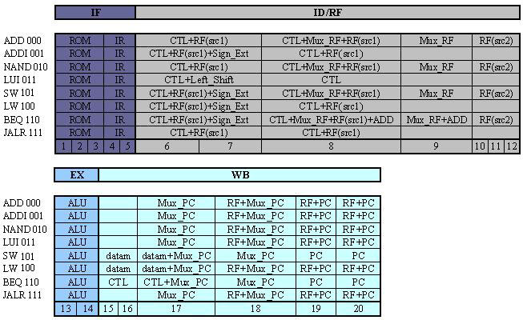

RiSC16 Simulators - Help
Help Index
RiSC16 Visual Simulator (Sequential Implementation)
├ Sequence of events
├ Interface Description
├ Control Panel
└ Menu

All instructions are executed in one machine cycle of 20 half clock cycles. This machine cycle is divided in four steps. These are successively:
- Instruction Fetch (IF): During this step, the program memory receives the address of the instruction from the program counter, and sends the instruction to the instruction register.
- Instruction Decode and Register Fetch (ID/RF): The control unit decodes the instruction, sends the operation code to the arithmetical-logical units and the address bits required to select source and target registers.
- Execution (EX): The arithmetical-logical unit receives the operands and executes the operation.
- Write Back (WB): The result is stored in its target register and the program counter receives the new address from its input multiplexer.
Help Index
RiSC16 Visual Simulator (Sequential Implementation)
├ Sequence of events
├ Interface Description
├ Control Panel
└ Menu